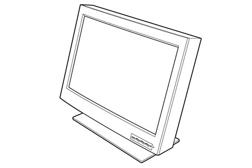

Linux, Nvidia, and the IBM T221 |
|
|
 |
In the year 2000, IBM developed the prototype for a new monitor; with 204 pixels per inch in a 22-inch frame, it was almost certainly the first of what we now know as "retina" displays. A year later, it was released as the IBM T220/T221, with the sort of price tag you might expect for such a monitor in an era with XGA was still considered the standard. Not long afterward, someone hit upon the magic letters, "HD", and the marketing-fueled stagnation that ensued ensured that no other monitor would surpass the T221 in resolution for over a decade. It was discontinued in 2005. Unfortunately, when IBM designed the T221, there was no display connector (and protocol) capable of carrying anywhere near the amount of data that would be required to drive it. The DVI specification was only a year old, and dual-link DVI was not yet common. Consequently, the monitor is driven via four single-link DVI connectors, bundled into a pair of proprietary and mechanically-incompatible LFH-60 connectors, with the option to use dual-link DVI via a very rare converter box. Some time after the monitor was discontinued, a fellow who goes by cirthix on the internet produced a custom dual-link adapter which fit inside the monitor's housing, allowing dual-link DVI to be used without the original converter box. This means that the monitor presents itself to the computer as a set of two or four tiles, which the computer treats as independent monitors. From this comes the challenge of owning a T221: figuring out how to stitch the tiles together. |
A Brief History of Relevant Hacks |
|
|
For Windows users there are a few reasonable solutions for the stitching of tiles. Some graphics drivers driver/card combinations offer such a feature out of the box. Nvidia calls this Mosaic or Surround, depending upon whether the card is a Quadro of Geforce. In my experience, Nvidia's Mosaic mode works perfectly fine on consumer-level Fermi-based cards that have been reflashed to masquerade as Quadros, whereas SLI-Mosaic mode does not. For Linux users, things used to be similarly simple. It was enough to enable multi-monitor mode in the nvidia driver, and disable Xinerama, preventing the driver from reporting monitor geometry to the windowing system. Better still, the driver provided a way to lie to the X server about the monitor geometry. The introduction of RandR and deprecation of Xinerama brought this to an end. For a little while longer, it was possible to force-disable RandR, but Gnome 3 (and presumably other window managers) have since become dependent upon it. After that, it was necessary to intercept RandR calls and modify the reported geometry on the fly. This solution was fragile however, and for me it no longer works. Fortunately, I have discovered a new method, which I believe to be workable in the long-term. |
|
An EDID-Based Solution for Linux with Nvidia |
|
Initial EDID, no tiling
Complete EDID, left tile
Complete EDID, right tile
|
In the nearly-two-decades since the T221 was introduced, the connector/protocol situation has not improved much: modern 4K and 5K monitors must typically be driven via a tiled interface as well. Newer monitors, however, have software support for stitching their tiles together, whereas the T221 does not. These monitors must report their tile geometry to the graphics driver via an EDID extension known as DisplayID, and, fortunately for us, it is possible to instruct the Nvidia driver to use an alternate EDID instead. If we can create a suitable EDID (including extensions which didn't exist when the T221 was new, or when the cirthix adapters were in production), then, for the first time ever, it will be possible to stitch the tiles together using a mechanism that was actually intended for that purpose. What follows will not be a complete step-by-step guide detailing how to do this; instead, it will be an account of the process through which I went, and the resources I found useful, along with the final results. For readers who simply want a working monitor, the latter will suffice; for readers to whom the process itself is valuable, I shall try to include enough information that it is possible to reconstruct the details. Rather than constructing an EDID from scratch, it is easier to start with the one created by cirthix for his adapter. This can easily be extracted from X server logs, or downloaded from his git repository. Since I have a 48hz T221 (as opposed to the earlier 41hz variant), I will be using the appropriate 48hz EDID as a starting point.
Now we come to the point where we will need to know some things about the EDID specification. Unfortunately, the specification is a commercial product and comes at quite a price. If you wish to avoid violating copyright laws, I recommend that you should definitely not search for the specification by name: VESA Enhanced Extended Display Identification Data Standard, Version 1, Revision 4. If your curiosity gets the better of you, obviously I cannot be held responsible. For the incurious and unpiratical, I will provide edited EDIDs. In addition to our initial EDID and some insider knowledge, it will be useful to have a copy of the
Unfortunately, the DisplayID specification is separate from EDID, and seems somewhat more difficult to come by. However, there are two other artifacts that we can reverse-engineer to create a valid DisplayID block. The first is the source for the
These blocks will need to be converted into binary files, which can be done in the following way:
The final piece of the puzzle is an xorg.conf file to load the EDIDs. You will need to specify them individually, matching them to the monitor IDs reported in |